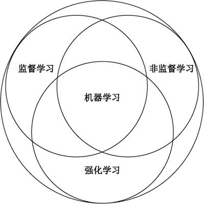
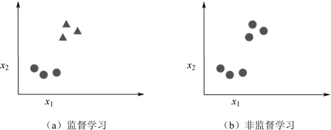

首页 > 编程笔记
无监督学习到底是什么？
前面介绍了一系列监督学习算法，这类算法有一个共同点，那就是事先知道所有训练数据样本属于哪个类别。这类算法在大多数应用场景下是适用的，但在某些场景下，无法知道每个样本属于哪个类别，这类算法就无法使用了，这时该怎么办呢？这就需要用到本节将要介绍的无监督学习算法。
大家在网上购物时，系统总会根据你的浏览行为推荐一些相关商品，这些商品是通过无监督学习中的聚类算法推荐出来的。无监督学习没有明确的学习目的，不需要给训练的数据打标签，其学习效果几乎无法衡量。
无监督学习是机器学习的分支之一，主要分为聚类算法和降维算法。
无监督学习是一种在不知道数据标签的情况下，根据数据特征本身的特点将训练样本进行自动分类的学习方式，它是机器学习的分支之一，如下图所示。
无监督学习和监督学习所使用的训练样本的区别如图 2 所示，监督学习的训练样本在进行训练之前就已经给出了相应的标签，而无监督学习的训练样本是没有标签的。
在进行训练的时候，无监督学习和监督学习的训练方式的区别如图 3 所示。对于监督学习来说，根据已知训练样本的类型，用算法将其分开即可。而对于无监督学习来说，由于没有给出训练样本的标签，只能通过寻找这些训练样本之间的关系来进行分类，比如，图 3 中依据训练样本之间的聚集度将其分为两大类，即右图中两个圆圈所示。

图 3 无监督学习和监督学习的训练方式的区别
另外，从目的来看，可以分为聚类和降维两大类。其中，前者是对没有标签的训练样本进行分类，后者是对训练样本的特征数据进行降维。
无监督学习的输出结果只是一群一群的聚类，就像被混在一起的多种药材，一个外行要处理这些药材，能做的只有把看上去一样的药材挑出来聚成多个小堆。如果要进一步识别这些小堆，就需要一个老中医（类比老师）的指导。因此，无监督学习属于先聚类后定性。
可见，独立分布数据更适合监督学习，非独立分布数据更适合无监督学习。
人为分析是一件成本很高且很复杂的事情，可以利用行为的特征对用户进行分类，从而找到那些行为异常的用户，然后深入分析他们的行为到底哪里不一样，判断是否属于违法行为。
通过无监督学习，可以快速对行为进行分类，虽然不知道这些分类意味着什么，但是通过这种分类可以快速排除正常的用户行为，更有针对性地对异常行为进行深入分析。
目前几乎所有的互联网厂商都在自己的网络平台上部署了相关的用户细分系统，从而可以有针对性地在不同的平台投放相应的广告。
大家在网上购物时，系统总会根据你的浏览行为推荐一些相关商品，这些商品是通过无监督学习中的聚类算法推荐出来的。无监督学习没有明确的学习目的，不需要给训练的数据打标签，其学习效果几乎无法衡量。
无监督学习是机器学习的分支之一，主要分为聚类算法和降维算法。
无监督学习的基本概念
现实生活中常常会遇到这样的问题，由于缺乏足够的先验知识，因此难以人工标注类别或进行人工类别标注的成本太高。很自然地，人们希望计算机能够完成这些工作，或者至少提供一些帮助。根据类别未知（没有被标记）的训练样本解决模式识别中的各种问题，称为无监督学习（或者非监督学习）。无监督学习是一种在不知道数据标签的情况下，根据数据特征本身的特点将训练样本进行自动分类的学习方式，它是机器学习的分支之一，如下图所示。

图 1 机器学习三大分支
图 1 机器学习三大分支
无监督学习和监督学习所使用的训练样本的区别如图 2 所示，监督学习的训练样本在进行训练之前就已经给出了相应的标签，而无监督学习的训练样本是没有标签的。

图 2 无监督学习和监督学习的训练样本的区别
图 2 无监督学习和监督学习的训练样本的区别
在进行训练的时候，无监督学习和监督学习的训练方式的区别如图 3 所示。对于监督学习来说，根据已知训练样本的类型，用算法将其分开即可。而对于无监督学习来说，由于没有给出训练样本的标签，只能通过寻找这些训练样本之间的关系来进行分类，比如，图 3 中依据训练样本之间的聚集度将其分为两大类，即右图中两个圆圈所示。
图 3 无监督学习和监督学习的训练方式的区别
无监督学习的分类
无监督学习从实现方式来看可以分为两大类，一类是基于概率密度函数估计的直接方法，即设法找到各类别在特征空间的分布参数，再进行分类。另一类是基于样本间相似性度量的简洁聚类方法，其原理是设法确定不同类别的核心或初始内核，然后依据样本与核心之间的相似性度量将样本聚集成不同的类别。另外，从目的来看，可以分为聚类和降维两大类。其中，前者是对没有标签的训练样本进行分类，后者是对训练样本的特征数据进行降维。
无监督学习的特点
这里主要将无监督学习和监督学习进行对比，两者的主要联系和区别有如下几个方面。1) 有标签vs无标签
监督学习又被称为“有老师的学习”，所谓的“老师”就是标签。而无监督学习又被称为“没有老师的学习”，相比于监督学习，无监督学习没有训练的过程，而是直接拿数据进行建模分析。2) 分类vs聚类
监督学习的核心是分类，无监督学习的核心是聚类（将数据集合分成由类似的对象组成的多个类）。3) 同维vs降维
监督学习的输入如果是 n 维的，则数据特征也被认定是 n 维的，通常不具有降维的能力。而无监督学习的目的之一就是对数据特征进行降维。4) 分类同时定性vs先聚类后定性
监督学习的输出结果会被直接打上标签，即分类和定性是同时进行的。这类似于中药铺的药匣，药剂师采购回来一批药材，需要做的只是把对应的药材放进贴着标签的药匣中。无监督学习的输出结果只是一群一群的聚类，就像被混在一起的多种药材，一个外行要处理这些药材，能做的只有把看上去一样的药材挑出来聚成多个小堆。如果要进一步识别这些小堆，就需要一个老中医（类比老师）的指导。因此，无监督学习属于先聚类后定性。
5) 独立vs非独立
在训练监督学习算法时，通常希望训练样本是完全独立分布的数据，但实际上，并不是所有数据都是相互独立分布的。或者说，数据和数据的分布之间存在联系。训练样本较大的偏移很可能会给分类器带来很大的噪声，而对于无监督学习，情况就会好很多。可见，独立分布数据更适合监督学习，非独立分布数据更适合无监督学习。
6) 不透明vs可解释性
监督学习的分类不具有可解释性，或者说，是不透明的，因为这些规则都是通过人为建模得出的，并不能自行产生。而无监督学习的聚类通常具有可解释性。无监督学习的应用
无监督学习和监督学习在方法和本质上的巨大差异，导致其应用方式和应用场景与监督学习也有较大的差别。1) 异常发现
有很多违法行为都涉及“洗钱”，“洗钱”行为跟普通用户的行为是不一样的，那么到底哪里不一样呢？人为分析是一件成本很高且很复杂的事情，可以利用行为的特征对用户进行分类，从而找到那些行为异常的用户，然后深入分析他们的行为到底哪里不一样，判断是否属于违法行为。
通过无监督学习，可以快速对行为进行分类，虽然不知道这些分类意味着什么，但是通过这种分类可以快速排除正常的用户行为，更有针对性地对异常行为进行深入分析。
2) 用户细分
这对于广告平台很有意义，不仅可以按照性别、年龄、地理位置等维度进行用户细分，还可以通过用户行为对用户进行分类。通过多维度的用户细分，广告投放可以更有针对性，效果也会更好。目前几乎所有的互联网厂商都在自己的网络平台上部署了相关的用户细分系统，从而可以有针对性地在不同的平台投放相应的广告。
3) 推荐系统
大家在淘宝、天猫、京东等网站或 App 上购物时，系统总会根据你的浏览行为推荐一些相关的商品，有些商品就是通过无监督学习中的聚类算法推荐出来的。关注公众号「站长严长生」，在手机上阅读所有教程，随时随地都能学习。内含一款搜索神器，免费下载全网书籍和视频。

微信扫码关注公众号